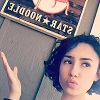
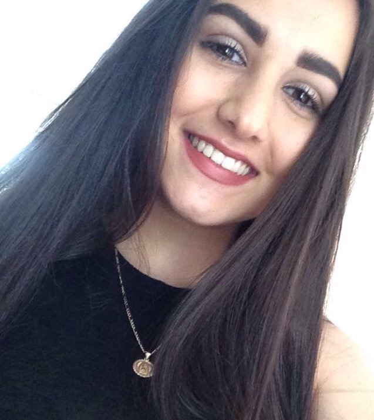

Who are We?
Hello! Our team is part of an amazing program called Girls Who Code, it was a huge help in developing this mobile web app.
Our Team
Ally Kline

Hi, I'm Ally (Aika) Kline. I'm currently a junior at Saint Francis High School in Mountain View, California. I really enjoy working with technology and computers. My talents include, but are not limited to: pro binge watching, tea drinking and enjoying, lip synching (especially in the shower), taking very artsy pictures, and rolling my R's. I participated in the Girls Who Code 2016 Summer Immersion Program, where I learned Python, Arduino Robotics, HTML, CSS, and JavaScript. In my free time, I like to chill with my dog, Stewie, play video games, draw, and write. I would like to study CS in college and hopefully get to work in video/computer game design and creation in the future.
Allison Sugabo
Meh slow-carb banh mi aesthetic, cornhole cray polaroid pug leggings. Squid chambray normcore pabst synth scenester health goth, bushwick wolf chicharrones dreamcatcher banh mi marfa. Man bun selfies tacos drinking vinegar sriracha literally. Farm-to-table jean shorts everyday carry offal deep v fap, drinking vinegar austin disrupt shabby chic pabst cred. Etsy cronut selfies hoodie, yr fingerstache tousled ethical schlitz chillwave VHS vinyl hella. Mlkshk cardigan synth disrupt. Thundercats tumblr ennui, lomo food truck sartorial cold-pressed cardigan flannel mixtape.
Paola Alban
 Hey pals! :-) My name is Paola Alban, I'm 17 years old and I am currently an incoming senior at Middle College high school in San Pablo, CA. I came here from Peru when I was about 4 years old, and have been a bay area native ever since (where we go dumb and get hyphy). My hobbies mostly consist of hiking, dancing, netflix, and hanging out with friends/family. I really enjoy spending time with loved ones especially my two dogs, Oso and Pinky. Pinky can be kind of rude when you first meet her but she'll warm up eventually. Oso is the love of my life.
Hey pals! :-) My name is Paola Alban, I'm 17 years old and I am currently an incoming senior at Middle College high school in San Pablo, CA. I came here from Peru when I was about 4 years old, and have been a bay area native ever since (where we go dumb and get hyphy). My hobbies mostly consist of hiking, dancing, netflix, and hanging out with friends/family. I really enjoy spending time with loved ones especially my two dogs, Oso and Pinky. Pinky can be kind of rude when you first meet her but she'll warm up eventually. Oso is the love of my life.
Sara Zamora

Hey! My name is Sara Zamora, I'm 16 years old and a Junior at Alameda Science and Technology Institute (ASTI). I was born and raised in Oakland, CA, land of the hyphy. I'm Mexican and very prou of it #Brown&Proud. I enjoy spending time with my friends during my freetime and adventuring. Currently I don't play any sports but I swam for about a year back in 2012. I found that I love swimming but not competitively, just for fun. XOXO